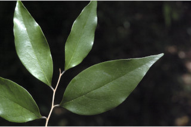
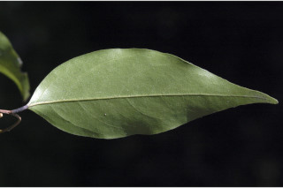
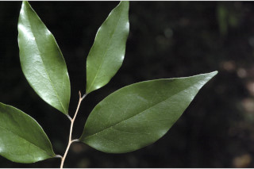
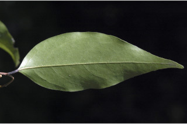

Small trees, ca.12 m tall.
ಅಂದಾಜು 12ಮೀ ಎತ್ತರದವರೆವಿಗೆ ಬೆಳೆಯುವ ಸಣ್ಣ ಮರಗಳು.
ഉദ്ദേശം 12 മീറ്റര് വരെ ഉയമുള്ള ചെറുമരങ്ങള്.
சிறிய மரம், 12 மீ. உயரம் வரை வளரக்கூடியது.
Branchlets slender, terete, glabrous.
ಕಿರುಕೊಂಬೆಗಳು ತೆಳುವಾಗಿದ್ದು, ಗುಂಡಾಕಾರ ಹೊಂದಿದ್ದು ರೋಮರಹಿತವಾಗಿರುತ್ತವೆ.
ഉരുണ്ടതും നേര്ത്തതുമായ, അരോമിലമായ ഉപശാഖകള്.
சிறிய நுனிக்கிளைகள் மெலிதானது, குறுக்குவெட்டுத் தோற்றத்தில் வளையமானது, உரோமங்களுடையது.
Leaves simple, alternate, distichous; petiole 0.4-0.6 cm long, canaliculate, glabrous; lamina 4-10 x 2-3.8 cm, narrow ovate to elliptic-ovate, apex obtusely acute or narrowly acuminate with blunt tip, base acute to cuneate, sometimes rounded, subcoriaceous, glabrous, shining, midrib flat above; secondary_nerves 6-8 pairs, slender, moderately ascending; tertiary and higher order nerves finely reticulate.
ಎಲೆಗಳು ಸರಳ, ಪರ್ಯಾಯ ಜೋಡನಾವ್ಯವಸ್ಥೆಯಲ್ಲಿದ್ದು ಕಾಂಡದ ಎರಡೂ ಕಡೆ ಎದುರು ಬದರಿನ ಲಂಬ ಸಾಲಿನಲ್ಲಿರುತ್ತವೆ. ಎಲೆತೊಟ್ಟು ಕಾಲುಗೆರೆ ಸಮೇತವಿದ್ದು, 0.4 ರಿಂದ 0.6 ಸೆಂ.ಮೀ. ಉದ್ದಹೊಂದಿದ್ದು ರೋಮಹಿತವಾಗಿರುತ್ತವೆ. ಎಲೆಪತ್ರಗಳು 4-10 × 2-3.8ಸೆಂ.ಮೀ. ಗಾತ್ರವಿರುತ್ತವೆ. ಪತ್ರಗಳು ಅಂಡಾಕಾರದಿಂದ ಅಂಡವೃತ್ತಾಕಾರದಲ್ಲಿದ್ದು ಮೊಂಡುಚೂಪುಳ್ಳ ಅಥವಾ ಮೊಂಡಾದ ಅಗ್ರವುಳ್ಳ ಇಕ್ಕಟ್ಟಾದ ಕ್ರಮೇಣ ಚೂಪಾಗುವ ತುದಿಯನ್ನು ಹೊಂದಿರುತ್ತವೆ. ಪತ್ರದ ಬುಡ ಚೂಪಾಗಿದುದರಿಂದ ಬೆಣೆಯಾಕಾರದವರೆಗಿನ ಮಾದರಿಯಲ್ಲಿರುತ್ತವೆ ಹಾಗೂ ಕೆಲವು ವೇಳೆ ಗುಂಡಾಗಿಯೂ ಇರುತ್ತವೆ. ಪತ್ರದ ಮೇಲ್ಮೈ ಉಪತೊಗಲಿನ ತರಹವಿದ್ದು, ರೋಮರಹಿತವಾಗಿದ್ದು ಹೊಳಪನ್ನು ಹೊಂದಿರುತ್ತದೆ; ಮಧ್ಯನಾಳ ಪತ್ರದ ಮೇಲ್ಭಾಗದಲ್ಲಿ ಚಪ್ಪಟೆಯಾಗಿರುತ್ತದೆ; ಎರಡನೇ ದರ್ಜೆಯ ನಾಳಗಳು 6 ರಿಂದ 8 ಜೋಡಿಗಳಿದ್ದು ತೆಳುವಾಗಿರುತ್ತದೆ ಹಾಗೂ ಕೊಂಚಮಟ್ಟಿನ ಆರೋಹಣ ಸ್ಥಿತಿಲ್ಲಿರುತ್ತವೆ.
ഇലകള് ലഘുവും, ഏകാന്തരക്രമത്തില്, തണ്ടിന്റെ ഇരുഭാഗത്ത് മാത്രം അടുക്കിയതുമാണ്; അരോമിലവും, ചാലോടുകൂടിയതുമായ, ഇലഞെട്ടിന് 0.4 മുതല് 0.6 സെ.മീ. വരെ നീളം; പത്രഫലകത്തിന് 4 മുതല് 10 വരെ സെ.മീ. നീളവും 2 മുതല് 3.8 സെ.മീ. വരെ വീതിയും, വീതികുറഞ്ഞ അണ്ഡാകാരം മുതല് ദീര്ഘവൃത്തീയ-അണ്ഡാകാരവും, അഗ്രം മുനപ്പില്ലാതെ കൂര്ത്തതോ മുനപ്പില്ലാത്ത ചെറുവാലോട് കൂടിയതോ ആണ്, പത്രാധാരം കൂര്ത്തതോ ആപ്പ് ആകൃതിയിലോ ചിലപ്പോള് വൃത്താകാരത്തിലോ ആണ്, ഉപചര്മ്മില പ്രകൃതം, അരോമിലവും, തിളങ്ങുന്നതുമാണ്, മുകളില് പരന്നിരിക്കുന്ന മുഖ്യസിര; സാവധാനത്തില് ആരോഹണക്രമത്തിലുള്ള നേര്ത്ത, ദ്വിതീയ ഞരമ്പുകള് 6 മുതല് 8 വരെ ജോഡികള്; ത്രിതീയ ഞരമ്പുകളും മറ്റ് ചെറുഞരമ്പുകളും ചേര്ന്ന് മികച്ച ജാലികാവിന്യാസം തീര്ക്കുന്നു.
இலைகள் தனித்தவை, மாற்றுஅடுக்கமானவை, இருநெடுக்கு வரிசையிலையடுக்கம் (டைஸ்டிக்கஸ்); இலைக்காம்பு 0.4-0.6 செ.மீ. நீளமானது, இலைக்காம்பு குறுக்குவெட்டுத் தோற்றத்தில் கேனாலிகுலேட், உரோமங்களற்றது; இலை அலகு 4-10 x 2-3.8 செ.மீ., குறுகிய முட்டை வடிவம் முதல் நீள்வட்டம்-முட்டை வடிவம், அலகின் நுனி கூர்மையானது அல்லது அதிக்கூரியதுடன் முனை மழுங்கியது, அலகின் தளம் கூர்மையானது, முதல் ஆப்பு வடிவம், சிலவற்றில் வட்டமானது, சப்கோரியேசியஸ், கீழ்பரப்பு உரோமங்களற்றது, மேற்பரப்பு ஒளிரும் தன்மையுடையது, மையநரம்பு மேற்புறத்தில் அலகின் பரப்பிற்கு சமமானது; இரண்டாம் நிலை நரம்புகள் 6-8 ஜோடிகள், மெலிதானது, மிதமாக நுனி நோக்கி வளைந்தது; மூன்றாம் நிலை நரம்புகள் மற்றும் அதற்கு மேலான நரம்புகள் நெருக்கமான வலைப்பின்னல் கொண்டது.
Flowers solitary or 2-3 in leaf opposed cymes, yellowish with pink tinge; pedicels 0.3-0.5 cm.
ಹೂಗಳು ಒಂಟಿಯಾಗಿ ಅಥವಾ 2 ರಿಂದ 3 ಹೂಗಳು ಎಲೆಗೆ ಅಭಿಮುಖಿಗಳಾದ ಸರಳ ಮಧ್ಯಾರಂಭಿ ಪುಷ್ಪ ಮಂಜರಿಯಲ್ಲಿರುತ್ತವೆ. ಹೂತೊಟ್ಟು ನಸುಗೆಂಪು ಛಾಯೆಯುಳ್ಳ ಹಳದಿ ಬಣ್ಣ ಹಾಗೂ 0.3 ರಿಂದ 0.5 ಸೆಂ.ಮೀ. ಉದ್ದವಾಗಿರುತ್ತದೆ.
പൂക്കള് ഒറ്റക്കായോ രണ്ടോ മൂന്നോ എണ്ണം ഒന്നിച്ച് ഇലകള്ക്ക് എതിരായുാകുന്ന സൈമുകളായോ ഉണ്ടാകുന്നു, പിങ്ക് കലര്ന്ന മഞ്ഞനിറം; പുഷ്പവൃന്തത്തിന് 0.3 മുതല് 0.5 സെ.മീ. വരെ നീളം
மலர்கள் தனித்தனியானது, அல்லது 2-3 மலர்கள், இலையின் எதிர்புற அமைந்த சைம், மஞ்சள் கலந்த பிங்க்; மலர்காம்பு 0.3-0.5 செ.மீ.
Clustered 1-3 seeded berries, subsessile, globose or cylindric with constriction between seeds, yellow tomentose.
ಒಂದರಿಂದ ಮೂರು ಬೀಜಗಳ ಸಮೇತವಿದ್ದು ಬೆರ್ರಿಗಳು ಸಾಮೂಹಿಕವಾಗಿರುತ್ತವೆ. ಮತ್ತು ತೀರ ಚಿಕ್ಕದಾದ ತೊಟ್ಟು ಹೊಂದಿದ್ದು ಗೋಳಾಕಾರ ಅಥವಾ ಬೀಜಗಳ ನಡುವೆ ಕಚ್ಚುಳ್ಳ ವರ್ತುಲ ಸ್ಥಂಭಾಕೃತಿಯ ಆಕಾರದಲ್ಲಿದ್ದು ಹಳದಿ ಬಣ್ಣದ ದಟ್ಟಮೃದು ತುಪ್ಪಳದಿಂದ ಕೂಡಿರುತ್ತದೆ.
ഒന്നുമുതല് മൂന്നുവരെ വിത്തുകള് ഉള്ളതും, കമ്പിളിരോമം പോലെ ചുരുണ്ടും പരസ്പരം കോര്ത്തുമിരിക്കുന്ന മഞ്ഞ രോമങ്ങള് നിറഞ്ഞതും, ഗോളാകാരമോ സ്തൂപികാകാരമോ ഉള്ളതും, വിത്തുകള്ക്കിടയില്, സങ്കോചിച്ചിരിക്കുന്നതുമായ സരസഫലങ്ങള് കൂട്ടമായുണ്ടാകുന്നു.
கொத்தான 1-3 விதைகள் கொண்ட முழுச்சதைகனி (பெர்ரி) சிறியகாம்புடையது, கோளவடிவானது அல்லது வட்டமானது மற்றும் இரண்டு விதைகளுக்கு நடுவில் குறுகியது; மஞ்சள் நிறமான மெல்லிய உரோமங்களுடையது.
 


